Lessons / AI trading, step by step
TradingView MCP Server with Claude: Every Tool, Set Up and Tested
How to connect TradingView's own MCP server to Claude, and what every tool does. TradingView now lets an AI assistant read its data through an official MCP server. In this video: connecting it to Claude Code from nothing, then each group of tools working on a real question: symbols and price history, the screener and technical ratings, fundamentals, earnings-call summaries and calendars, news, watchlists and alerts. Then what it can't do, and how an alert it read becomes a paper order through Alpaca's MCP server.
Prices and numbers are as of the video's publication, October 14, 2026.
The code for this lesson: github.com/nexusfissioncode/algo-trading/tree/main/tradingview-mcp
What it is Watch from 0:44
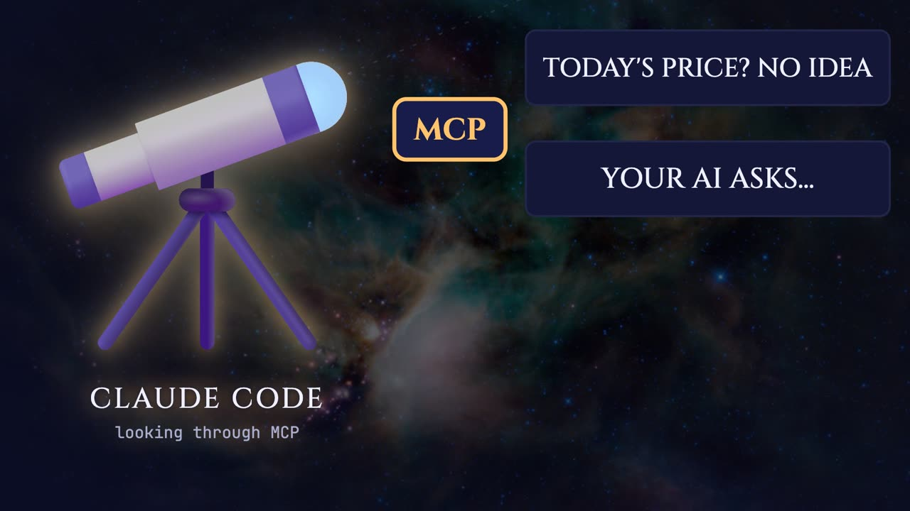
First, the idea underneath all of this. An AI like Claude only knows what it was trained on. It doesn't know today's price of anything, and it can't see your TradingView account.
M C P, the model context protocol, is a standard plug that fixes that. A company wraps its data and its actions as tools, and any AI that speaks the protocol can call them. TradingView's own announcement compares it to the one universal port that lets any device talk to any accessory.
So your AI asks a question, picks the right tool, and TradingView answers with real data, the same numbers you see on your charts.
Here's the whole of TradingView's server as a sky full of constellations. Each constellation is one group of tools, and each star is one tool: looking up a symbol, price history, the screener, company fundamentals, documents like earnings calls, calendars, news, watchlists and alerts.
Most stars are pale. Those tools only read, and TradingView's own page says they never modify the account. The gold ones, in watchlists and alerts, create, change or delete things in your account, so those are the ones we'll put behind a lock.
35 tools in nine groups, all reachable from one sentence typed to your AI.
TradingView announced the server in September, and it's still marked beta. This is its own documentation page, and it's worth reading yourself.
It connects TradingView to your AI assistant, whether that's Claude, ChatGPT, or another client that speaks the protocol.
You need a paid plan. It's included in Essential and above, and trial plans don't get it.
You sign in with your TradingView account, the same login you use every day. There are no keys to copy or to leak.
The page says calls are limited to about 100 every 60 seconds. One small note: TradingView's announcement also says it may limit calls per day during the beta, so expect limits to move while it's new.
And here are the groups of tools, each with its own list, and every tool marked read only or write. It's a long page, so I'm scrolling past the details: each tool lists exactly what it accepts, like a symbol, a time frame or a number of bars. Further down are the alert tools, and one line there matters a lot.
Keep this line in mind for later: webhook alerts can't be created through M C P. We'll come back to why.
Connect it Watch from 3:09
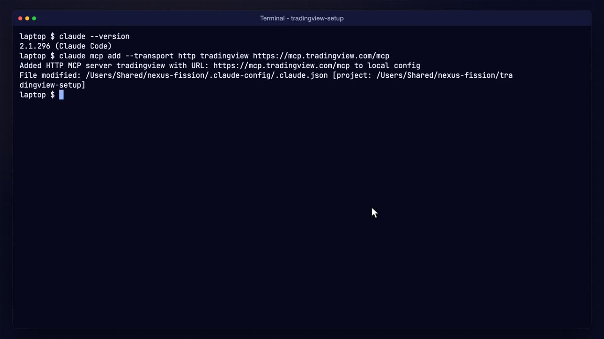
Here's the setup from nothing, in a terminal. You need Claude Code installed, and its install page is linked on GitHub. First, check the version.
Claude Code is installed. Then one line adds TradingView's server, by its web address, over plain web requests.
Added, for this folder. Claude Code keeps a list of servers for each project folder.
And the list of servers shows it with its address, and a tick that says connected.
The first time, you sign in. Inside Claude Code you type slash M C P, pick TradingView, and choose Authenticate. A sign-in page opens in your browser, you approve access, and you're done. That part is my password, so I did it off camera.
What comes back works like a key that Claude Code keeps for you, so there's nothing secret sitting in a file in your project.
One tip from setting this up. My first try opened Safari, and the sign-in page was blocked. Copying the link Claude Code prints into a browser where I was already signed in to TradingView worked straight away.
Now inside Claude Code, slash M C P lists every server it knows about.
Here's TradingView's, and I press enter to open it and see the details.
Connected, and authenticated, so the sign-in I did earlier in the browser worked.
And it offers 35 tools. A light note here: the docs call the server M C P dash TradingView, and I simply named mine TradingView. The tools also show up with a longer prefix in front of each name than the docs list. That matters when you write permission rules, which is next.
Before asking anything, I put a settings file in the project folder. It's on GitHub, so you can copy it.
The allow list lets every TradingView tool run without asking me first.
But the ask list names each tool that changes your account, like creating an alert or a watchlist. Ask beats allow, so those always stop and ask me first.
Three words run the whole lock. Allow means a tool just runs, and every pale star is allowed.
Ask means it stops and waits for a yes, every time. Every gold star is on that list, so nothing in my TradingView account changes without me.
And deny means never. Later, when a broker joins in, stock and option orders go on that list. Deny beats ask, and ask beats allow.
Look up and price history Watch from 5:33
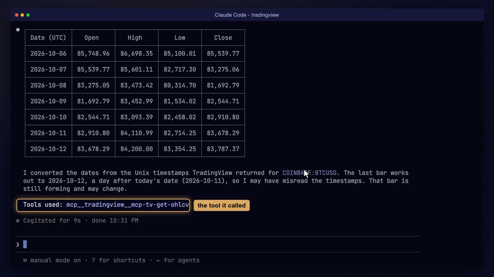
Now the examples, starting simple. I ask Claude to find Apple's TradingView symbol.
Nasdaq, colon, A A P L. TradingView names every symbol as the exchange, a colon, and the ticker, and every other tool expects it in that form. It's a small thing, but getting the symbol right first saves every later question from guessing.
Next, Bitcoin's last seven daily bars from Coinbase, as a table, and I ask it to name the tool it used at the end.
The tool is TradingView's price history tool. Each bar comes back as an open, a high, a low and a close, with a time stamp Claude turns into a date.
Here's one day, read straight from TradingView. Claude also noticed that the last date looked like tomorrow. That's because the times are in universal time, where it was already the next day, and the last bar was still forming.
Here's what that one call brought back, drawn as candles. Claude didn't guess any of these numbers. It asked TradingView's market data tool, and those are TradingView's bars.
Three falling days, then four rising ones. A candle is one day: the body runs from the open to the close, and the thin line from the low to the high.
The last one is thin because the day wasn't over yet. Anything your AI decides from price history should know which bar is still moving.
The screener and ratings Watch from 6:56
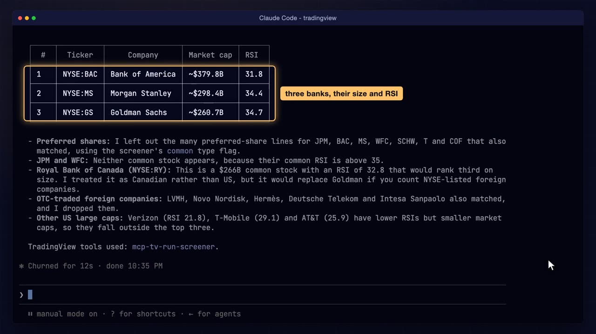
The screener is where this gets useful. On TradingView's website it's a page full of filters and columns that you click through one by one. Here it's a fresh Claude session, and one question in plain English, typed out in full so you can read it. Watch how much it asks for in a single sentence.
Which American common stocks worth more than $100,000,000,000 have an R S I under 35 today? Show me the top three by size.
It ran TradingView's own screener, the same one on the website, with my filters turned into its columns.
Three banks came back: Bank of America, Morgan Stanley and Goldman Sachs, with their size and their R S I.
And it's honest about what it left out. The screener also matched lots of preferred shares, which share their parent company's size, so Claude filtered them out itself. It also flagged Royal Bank of Canada as a judgement call. That's the kind of detail you only get by reading the raw results.
Here's what the screener did, as a sieve. R S I, the relative strength index, scores how hard a price has moved lately, from zero to 100. Under about 30 is usually called oversold. So the question was: which giant companies have been sold off hard lately?
Thousands of stocks went in, and three filters left three banks.
Then I asked for TradingView's technical rating, which rolls moving averages and oscillators into one verdict, from strong sell to strong buy. A low R S I and a sell rating at the same time is a useful thing to know before you touch anything.
Same session, so Claude remembers the three names. Now the technical rating for each of them.
All three come back as sell. Moving averages say strong sell, oscillators say neutral, and Claude adds that a strong downtrend means the low R S I isn't a signal to buy on its own. That's not advice, it's TradingView's own reading, put into words.
Fundamentals and calendars Watch from 8:51
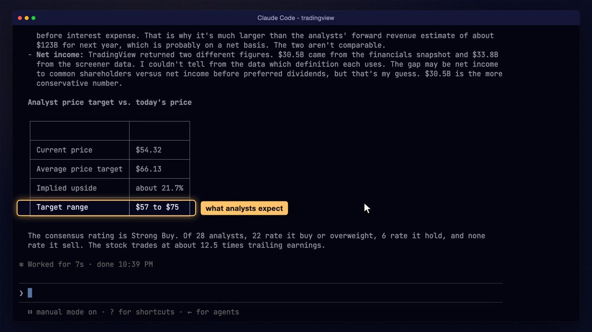
Charts tell you what a price did. Fundamentals tell you about the business underneath: how much it sells, how much it keeps, and what analysts expect. A new session, about the first bank on that list.
Bank of America's revenue and profit over the last 12 months, and what analysts expect the price to be.
The analysts' average target sits a good way above today's price, with a range on either side. And again, Claude points out a wrinkle: TradingView returned two different profit figures from two tools, and it says which one it trusts and why.
Two more groups are worth knowing. Documents covers filings and earnings call transcripts. A whole call is long, too long for Claude to read in one go here, so it reached for the call's own summary instead.
You ask for three lines, and you get three lines: results, what the bank gave back to shareholders, and what management expects next.
Calendars covers earnings dates, economic releases and dividends, so you can ask what's coming before it moves your chart.
So I ask Claude to summarise the bank's latest earnings call in three short lines.
Revenue and profit up, money returned to shareholders, and the outlook, with the risks management named. It found the call in the documents list first, and then it read the summary.
Then the week ahead: the earnings reports and economic releases that move markets.
Bank earnings, and the inflation report midweek, each with TradingView's forecast. One sentence, two calendars, and no website tabs.
News Watch from 10:22
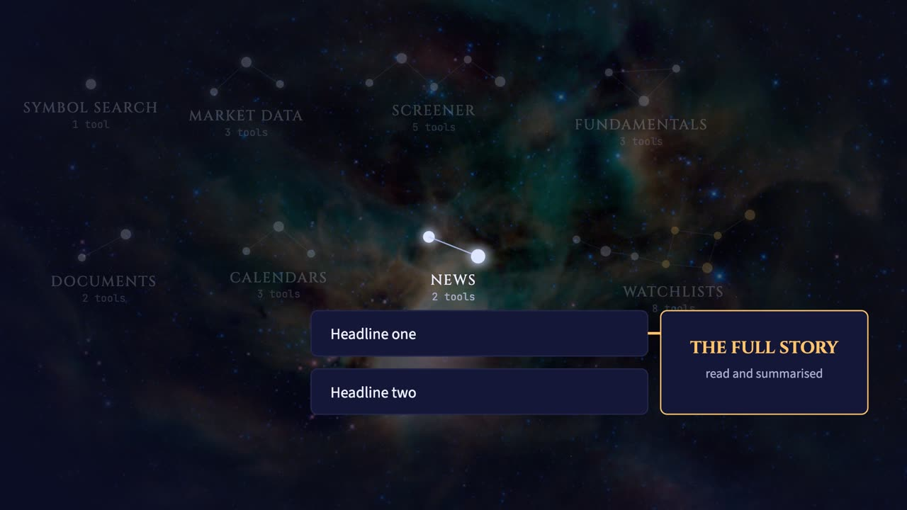
News is two tools: one lists the latest headlines for a symbol, and one fetches a whole story.
Together they let your AI read the news behind a move for you, rather than just repeating a title.
A new session, and a question about the news. Prices and ratings tell you what happened, but not why. For the why, you need the stories behind the move, and TradingView carries a news feed for every symbol. So I ask for the latest on the same bank, and a short summary I can read in a few seconds.
The two latest headlines for Bank of America, and a two-sentence summary of the top story.
It looked up the symbol, listed the headlines, then fetched the full story. Three tools, named at the end, so you can see exactly what it did.
Two headlines, and a summary that ties them back to the bank's earnings date and the inflation report, the same days we just saw on the calendar. Each piece of this video is one tool, and the AI joins them up.
Watchlists Watch from 11:19
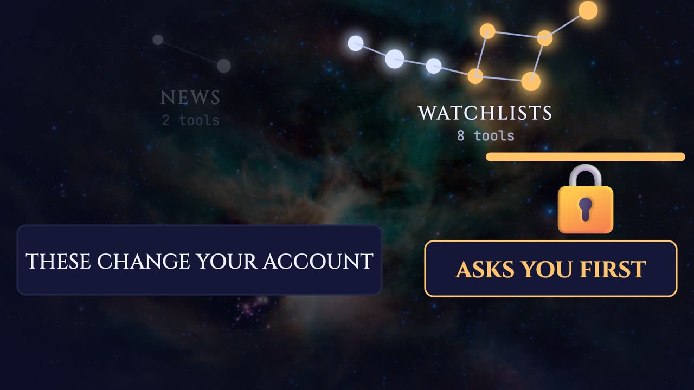
So far, everything only read. Watchlists are the first group that writes: three tools look at your lists, and five create, rename, fill, empty or delete them.
Those five are on the ask list in the settings file, so Claude can't use them without me pressing yes.
Let's turn the three banks from the screener into a real watchlist in my account.
A new session, and one sentence. This time Claude isn't just reading. It's about to make something in my TradingView account, so the settings file should stop it before anything changes.
Make me a TradingView watchlist called M C P demo, with Bank of America, Morgan Stanley and Goldman Sachs.
And it stops. The gate shows the exact tool and what it will send.
I say yes, once, for this one call. Claude Code had shown the list's name and its three symbols first, so I knew exactly what I was approving.
Created, as a private list. Claude even mentions that TradingView didn't switch to it, so I'll go and find it myself, over in the browser.
Here's my TradingView chart, in the browser. I open the watchlist menu and choose to see all my lists.
And there it is, M C P demo, with its three symbols, made by the AI and approved by me.
Alerts Watch from 12:33
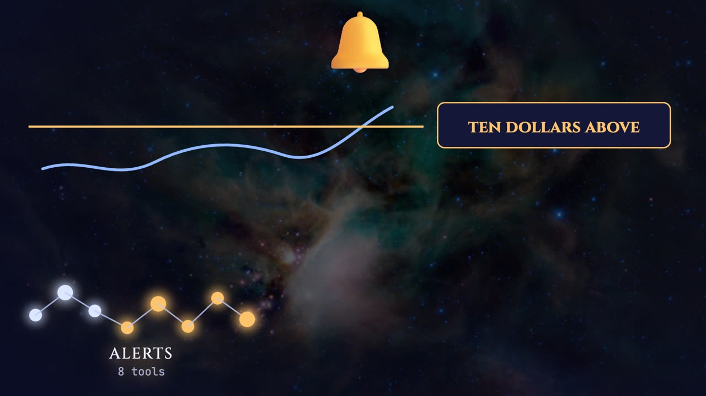
Alerts are the other gold constellation. Three tools read your alerts and their history. Five create, change, pause, resume or delete them.
Through M C P you can create a simple price alert: a line on a price, and an alert when the price crosses it. To see one fire quickly, I'll put it just $10 above Bitcoin's price.
When the price crosses, the alert fires, and TradingView writes it into the alert's history. Remember that history. It's what lets an AI find out later what happened.
A new session. What's Bitcoin's last price on Coinbase? Then set a price alert named M C P demo, $10 above it. Giving the alert a name matters, because later I'll ask Claude to find it and delete it by that name.
It reads the price first, then works out the level.
And the gate again: create an alert, with the symbol, the price and the name, waiting for me.
Yes. I approve this one call.
The alert is set, and Claude tells me TradingView starts it in the background, so it checks the state rather than assuming. Next, let's check TradingView itself.
On TradingView, I open the alerts panel, and I've sped up the wait.
There's the alert, active, at the price Claude chose. A couple of minutes later, Bitcoin crosses it.
The log shows it fired, and TradingView's own pop-up appears on the chart, the same notice you'd get if you'd set the alert by hand. Now let's see whether the AI can find out what happened.
Back in Claude Code: did any of my alerts fire in the last ten minutes? Check the history.
Yes. It read the fire times and the message straight from the alert history, and noticed it fired twice, a second apart, as the price wobbled around the level. No webhook was attached, and that's the next thing to understand.
Here's the limit I mentioned. A webhook is a message TradingView sends to a web address the moment an alert fires, and it's how most automated trading starts. But you can't create a webhook alert through M C P. TradingView's page explains why: webhooks need your two-factor sign-in check to be verified first, and that check isn't available to an M C P connection yet.
Indicator alerts aren't supported yet either, only simple price conditions. What you can do is the reverse direction: let the alert fire on its own, and have the AI read the alert history afterwards.
So the alert doesn't call the AI. The AI looks back and asks what fired. That's slower than a webhook, so it suits decisions measured in minutes or hours, not seconds. If you need the instant version, our earlier videos build it with a webhook and a small server, and they're linked in the description.
Putting it together Watch from 15:15
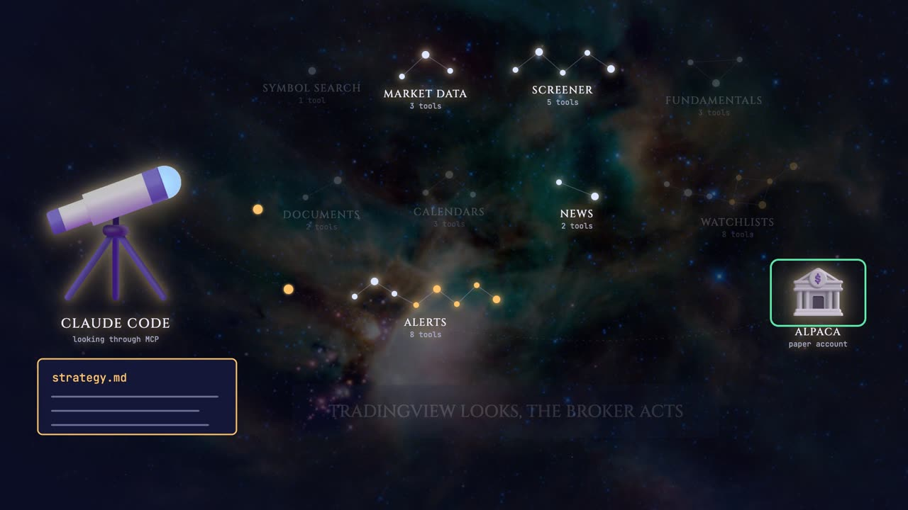
Now the pieces join up. The alert I set fired, and its history is waiting to be read.
For the action, I add a second server: Alpaca's own M C P server, on a paper account, so nothing here is real money. TradingView looks, and the broker acts.
And instead of a long prompt, the rules live in a plain English file called strategy, so you can read, change and share them. Claude follows the file; it doesn't make up a strategy.
Here's the strategy file. It's short on purpose, and each rule is something Claude can check with a tool.
Act only on my Bitcoin alert, and only if it fired in the last hour, read from the alert history, never guessed.
Before buying, look with TradingView: the daily rating mustn't be a sell, the last close must hold above the day before's low, and no headline in the last day about a hack, a ban or an exchange failure.
If it all passes, buy $100 of Bitcoin, on paper, and never if I already hold some. That last rule stops it buying twice.
Then one line adds Alpaca's server to this project. The keys stay in environment variables, and the settings file only stores their names, in single quotes, so the real keys never land in a file. Then I start Claude Code in the folder. It finds both servers, TradingView for looking and Alpaca for acting, and it's ready for one prompt that does the whole job.
One prompt: read the strategy, check my alert history, and if the alert fired, check the rating, the bars and the news, then act on my paper account and tell me each check. Claude reads the file, calls TradingView and Alpaca several times, and I've sped up the wait.
Here's its table. The alert fired within the hour: pass. The rating is buy: pass. The close held: pass. Nothing held already: pass. But the news check failed. Hack headlines from the last day, about a wallet maker and a hardware wallet company, and it read my rule literally. No order was placed.
That's not the AI misbehaving. It's the most useful thing in this video. My rule said no headline about a hack, and I meant a hack at an exchange. Claude can't read my mind, so it read my words.
Which hack? A wallet maker getting hacked doesn't stop Bitcoin from trading, but my rule didn't say that.
So I tell it what I meant: only failures at an exchange. In real use you'd fix the file itself, so the next run reads it the same way. Vague rules are the bug, not the AI.
If the news rule stopped you because of wallet makers or a sidechain, I meant failures at an exchange only, so go ahead. It re-checks the alert time, still inside the hour, and asks to place the order.
The gate: Alpaca's order tool, Bitcoin, a buy, $100.
Yes, I approve it, on paper only.
The order is in: a market buy of $100 of Bitcoin, on paper. And Claude re-ran every check against my clarification and says which ones it checked, including that it only read the newest headlines.
On Alpaca's dashboard, the paper account, marked no real money, shows the newest order: Bitcoin, bought at market, filled.
Here's the whole chain. The alert fired by itself in TradingView. Claude read the history, looked at the rating, the bars and the news through TradingView's tools, and checked my rules from a file.
Only then did it ask to place one paper order through Alpaca, and I approved it. TradingView was the eyes, the broker was the hands, and the rules and the yes stayed mine.
Where it stops Watch from 18:48
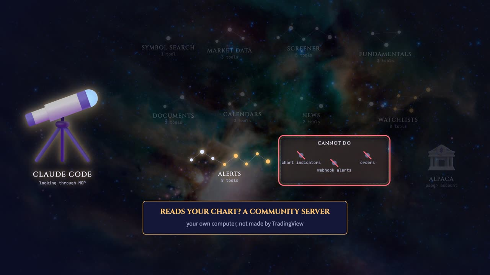
Let's be clear about where it stops. Three things stay dark. It can't read the indicators or the Pine Script on your chart. It can't create webhook alerts. And it can't place orders, because TradingView here is data, not a broker.
One more light note, so nothing surprises you. TradingView's announcement shows an example that sets an alert on a fifty-day moving average, while the documentation says indicator alerts aren't supported yet. It's a beta, so check the docs for what works today.
If you want an AI that reads your actual chart, there's a popular community server that does that by driving the TradingView desktop app on your own computer. It isn't made by TradingView, and it can't run on a server, so it's a different tool for a different job.
And for orders, you add a broker's own M C P server next to TradingView's. That's the last piece.
Where to read more Watch from 19:41
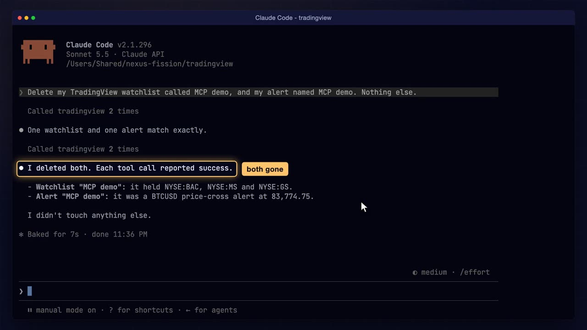
Before the references, a habit worth copying: clean up what the AI made. The demo left a watchlist and an alert in my account, and neither should outlive the video.
Delete my watchlist called M C P demo, and my alert named M C P demo. Nothing else. Both are gold tools, so each one asks first.
Both gone, and Claude says exactly which two it removed, with what each one held, and that it touched nothing else. To be sure, I check TradingView itself, open the alerts panel, and look for the demo alert in my list.
And TradingView agrees: the demo alert is no longer in my list.
So that's the whole sky: nine groups of tools, read and write, and the places it stops. TradingView's own documentation lists every tool and its settings, and it changes during the beta, so it's the first place to check.
Alpaca's M C P server is open source on GitHub, if you want the broker half.
And everything I typed in this video, the settings file, the strategy file and every prompt, is on GitHub in the tradingview M C P folder, linked in the description. Remember it's all for education: try it on paper, read your rules twice, and keep the gold stars behind a gate.